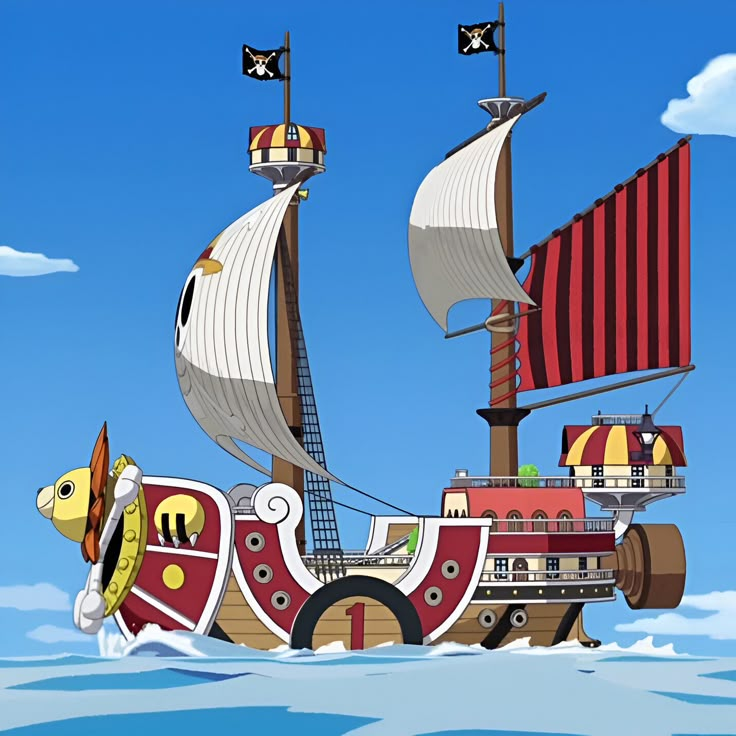
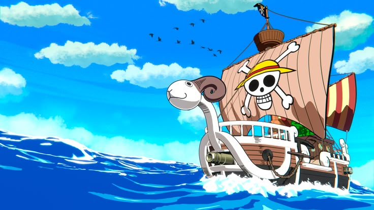
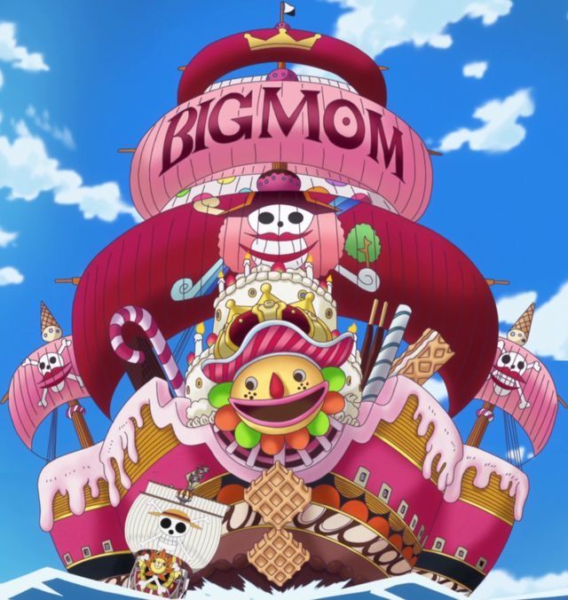
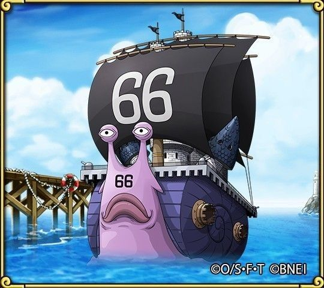
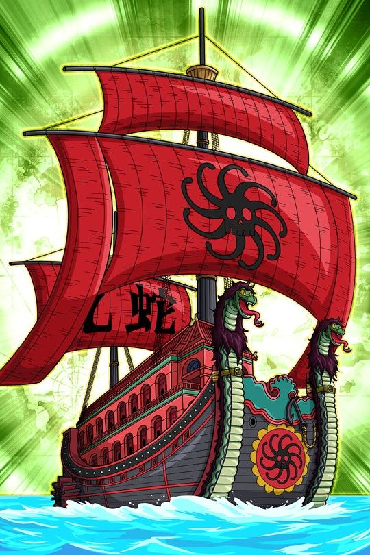
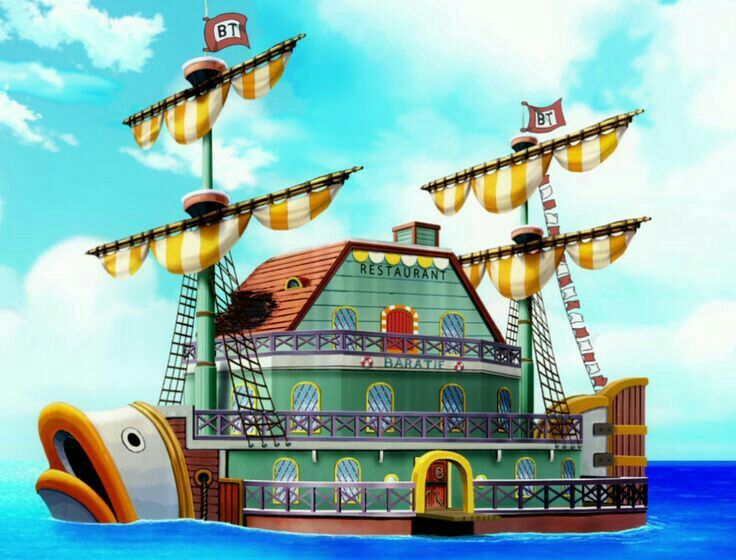

Moby Dick
(tipulación de los piratas de barba blanca)
Thousand Sunny
(Barco de los mugiwaras)

Going Merry
(Primer barco de los mugiwaras)

Queen Mama Chanter
(Barco de Big Mom)

Saint German
(Barcos del Germa 66, de los cuales existen varias docenas)

Perfume Yuda
(Barco de la Boa Hancock)

Baratie
(Barco-restaurante de Zeff)
